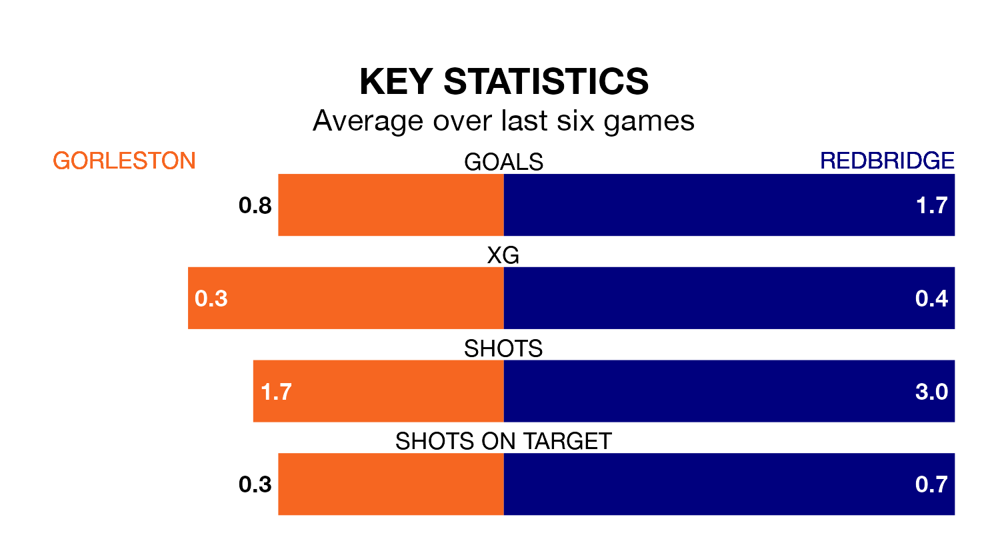

Redbridge come to play Gorleston on late Wednesday in poor form, having collected just four points from their last six games.
The visitors have won one and drawn one of their last six fixtures, while Gorleston have a win and three draws.
Redbridge are 15th in the table after 13 games, of which they have won four and drawn four, earning 16 points.
Gorleston are three places ahead of the visitors in 12th, with five wins and five draws putting them on 20 points.
With 22 goals in 17 games so far this season, the home side are scoring at below the league average rate with 1.3 goals per game. But they are conceding fewer than average too, letting in 24 goals at a rate of 1.4 per game.
Redbridge, meanwhile, are above average scorers, with 1.8 goals per game, compared to a league average of 1.7. They have conceded 2.2 goals per game.
Gorleston's last match was on Saturday, a 1-1 draw against Stowmarket Town.
Redbridge beat Witham Town 2-0 last time out, on December 16.
Updated: 10:50, 10/01/24